- 应用
- Harness Evolution Web + API
- 分支
- agent/develop-m10-05-2c8a3d899d90
- 提交
- 281981d
- 数据
- fixtures/m2-synthetic + m10_05_seed.py
- 目标
- skill:synthetic-review@synthetic-1
- 窗口
- 2026-10-20 ~ 2026-10-25
Computer Use · 真实 API + SQLite + 无头 Chrome
m10-05 四步启动向导 · 集成冒烟报告
四步启动向导在真实 API、fixture 数据库与无头 Chrome 中走通「选择范围 → Session 关联 → 潜在 bad case → 归因预览」；仅聚类与启动自进化两个出口分别落到 cluster preview 与 run detail。与 prototype HTML 的同场景截图逐屏对比，未发现需要修复的视觉或交互差异。
6冒烟场景
0需修复缺陷
15向导单测
1 / 1E2E
Environment and Artifact
2026-11-17 · 1408×960 · Asia/ShanghaiScenario Matrix
6 pass| # | 场景 | 结果 | 观察 | 证据 |
|---|---|---|---|---|
| 01 | 第 1 步 · 选择范围与策略 | PASS | 空间、对象、版本、时间段、默认策略与自定义策略均可见；与 prototype 的字段顺序和层级一致。 | after-01-wizard-step1.png prototype-01-wizard-step1.png before-01-wizard-step1.png |
| 02 | 第 2 步 · Session 关联 | PASS | 真实 matcher 关联到「示例会话三：技能分叉」；五段统计为 4 上报 / 1 关联 / 3 跳过 / 0 版本未知 / 0 待同步。 | after-02-wizard-step2.png prototype-02-wizard-step2.png before-02-wizard-step2.png |
| 03 | 第 3 步 · 潜在 bad case | PASS | 策略纳入 badcase-synthetic-0003，命中原因 self 上报；按设计新增命中原因列，行序与触发点时间由服务端给出。 | after-03-wizard-step3.png prototype-03-wizard-step3.png |
| 04 | 第 4 步 · 归因预览与缓存开关 | PASS | 四个数字为潜在 1 / 复用 0 / 新增 1 / 历史非该对象 0；缓存开关默认开启，切换会重新请求只读归因预览。 | after-04-wizard-step4.png prototype-04-wizard-step4.png |
| 05 | 仅聚类出口 | PASS | POST cluster-previews 返回 202 后跳到 /evolution/cluster/<runId>，页面显示「仅聚类分析：未执行 patch 生成与评测迭代」与「准备中」。 | after-05-cluster-preview.png |
| 06 | 启动自进化出口 | PASS | POST runs 返回 202 后跳到 /evolution/runs/<runId>；本地 git origin 让异步 prepare 保持「准备中」，证明路由与 202 受理语义正确。 | after-06-run-detail.png |
Issues and Observations
P3 运行详情仍是 V1 六步页运行详情仍是 V1 六步页
- 实际
- run detail 显示六步详情，且沿用旧 prepare 的 probe 命中口径。
- 预期
- 七步详情与潜在/归因/聚类新管线属于并行的 m10-04 交付边界。
- 结论
- 不是 m10-05 向导缺陷；已在本 PR 的限制中说明，m10-04 合入后统一。
已知边界
Evidence
11 screenshots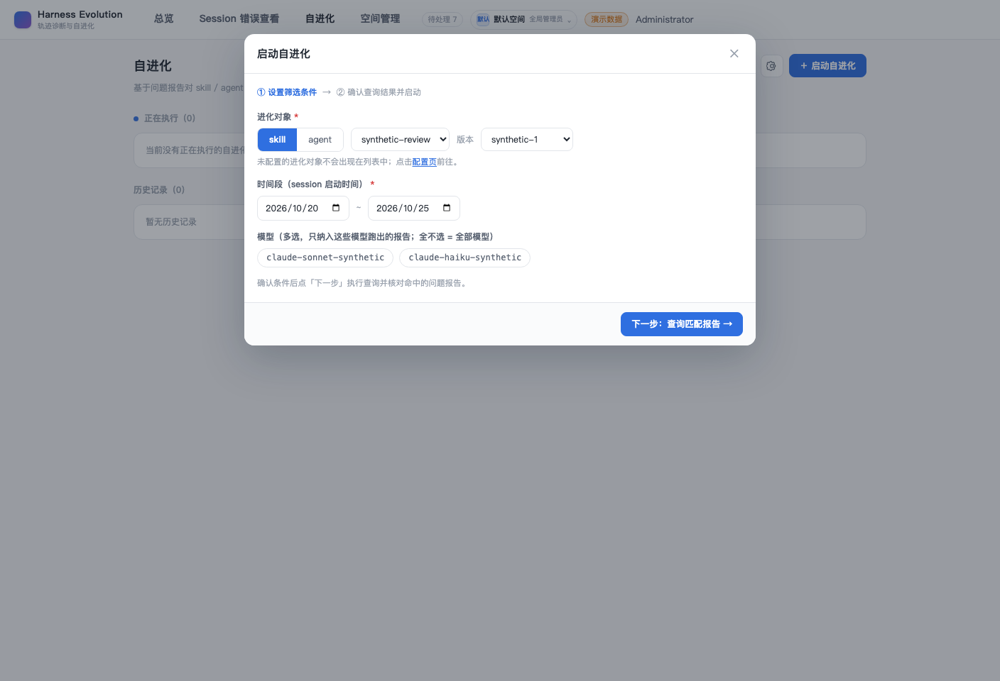
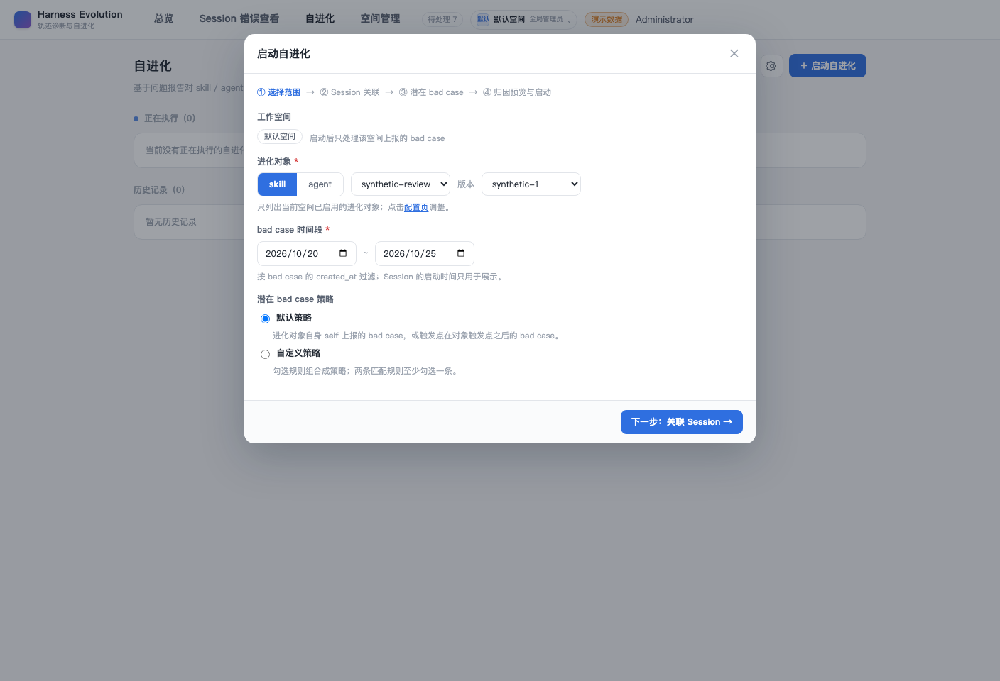
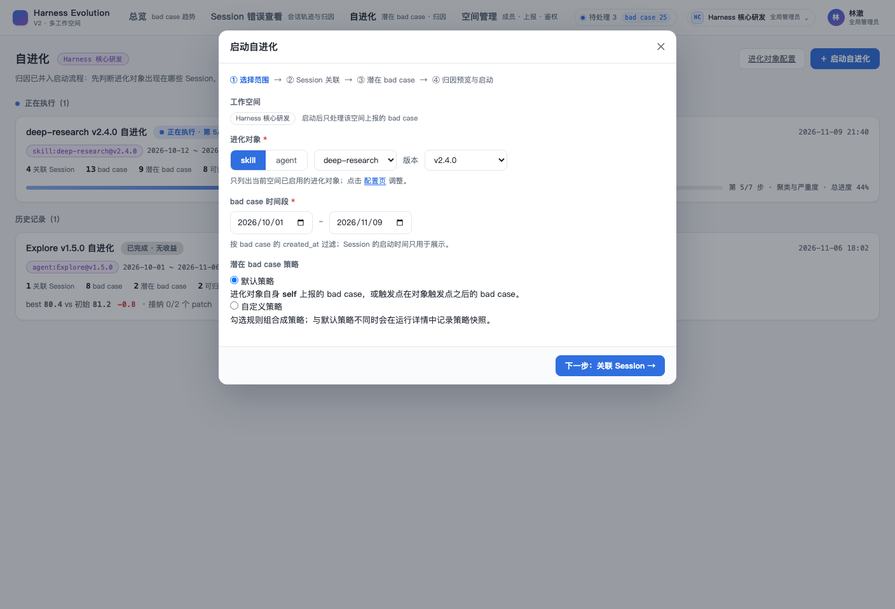
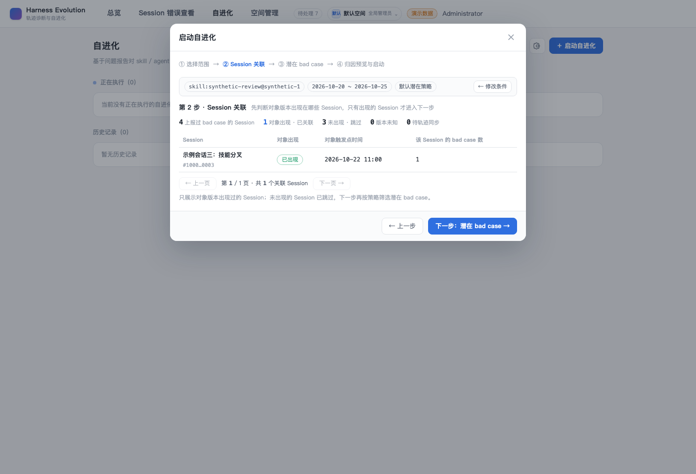
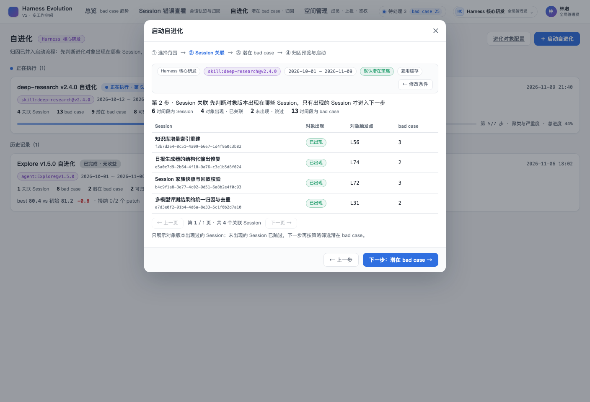
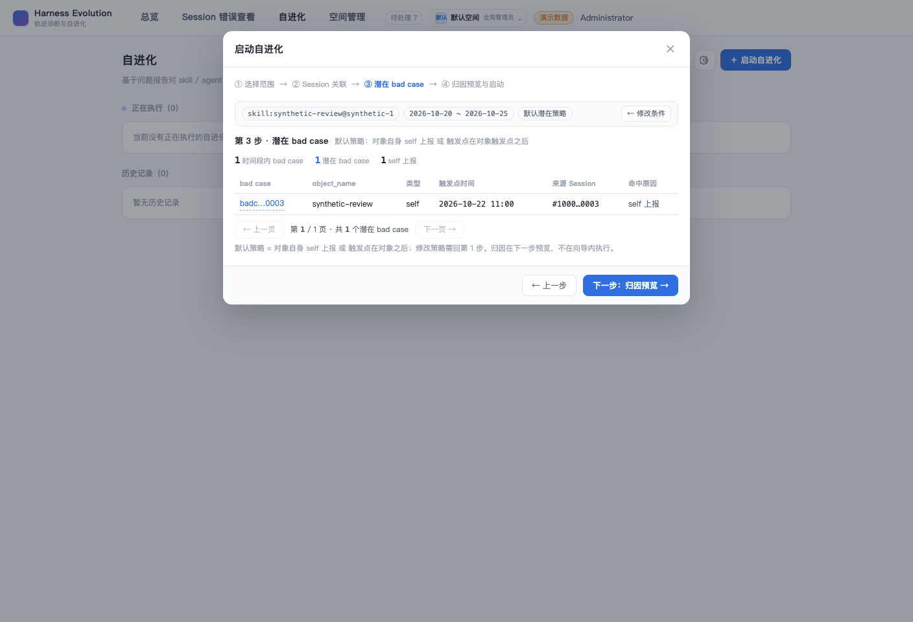
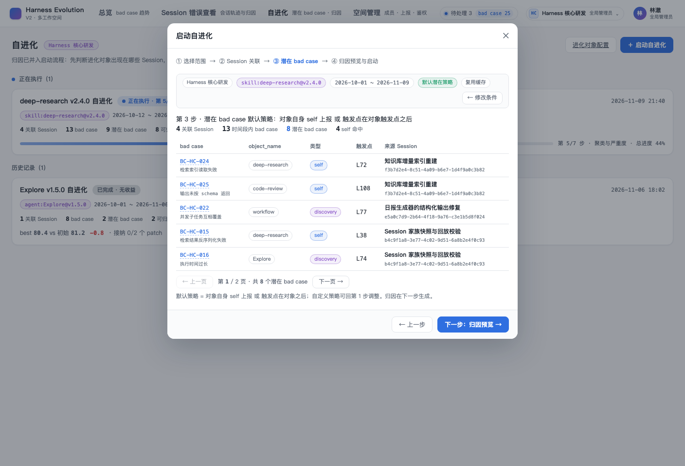
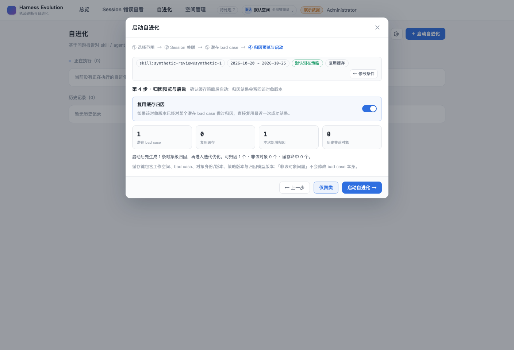
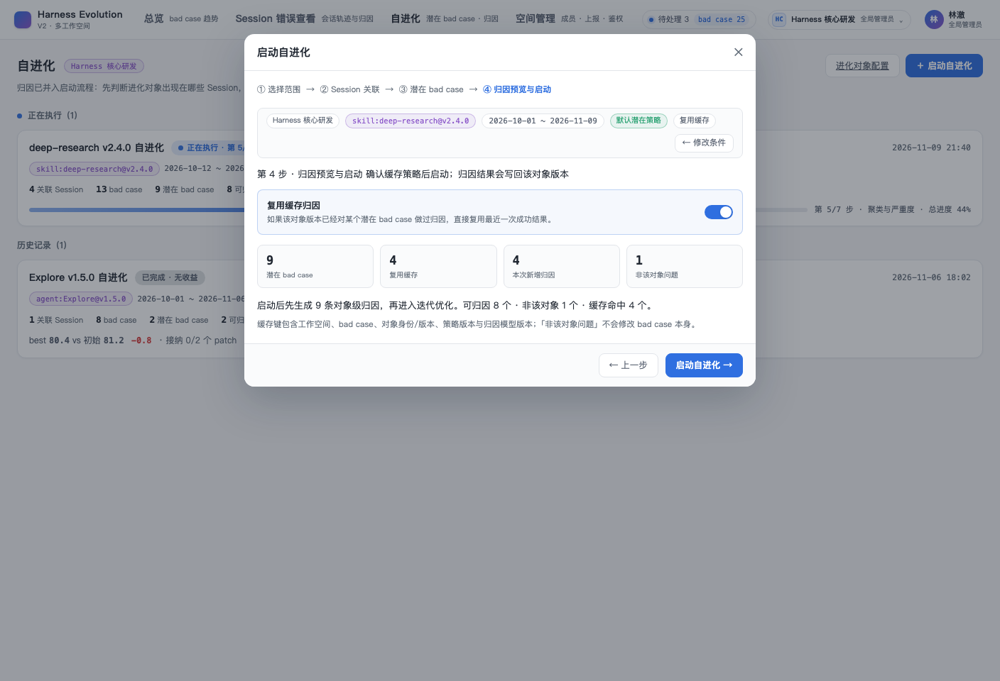
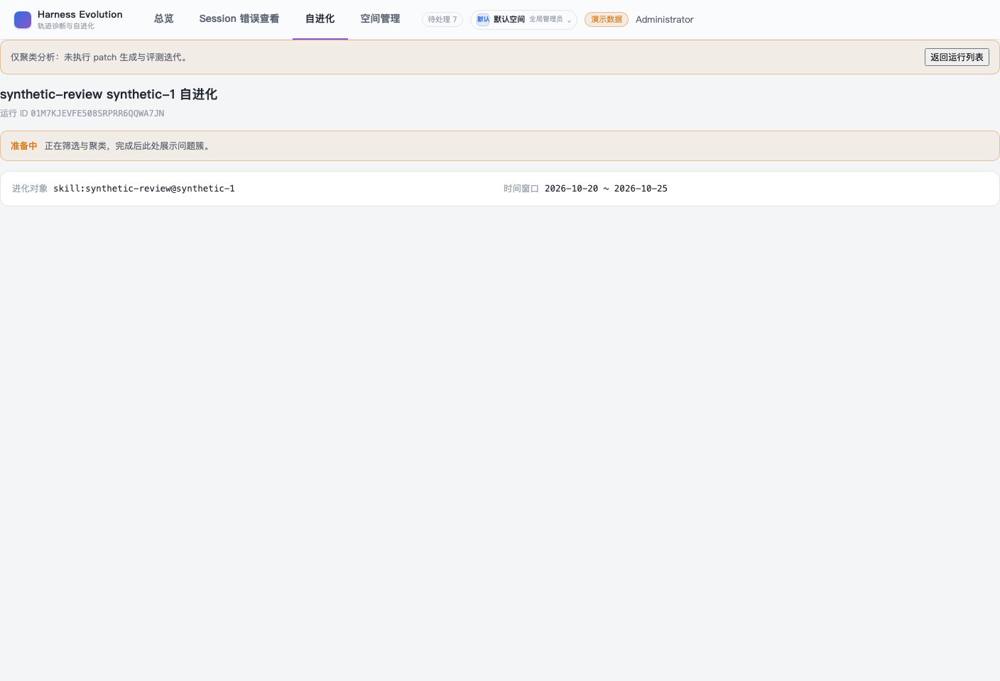
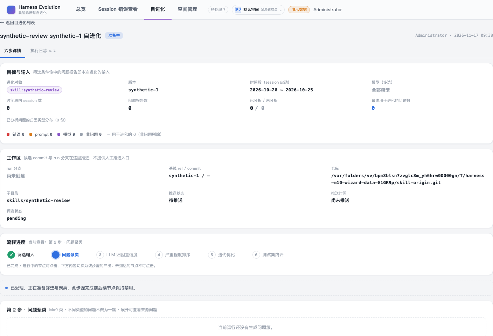
Automated Coverage Assessment
4 areas reviewed| 范围 | 覆盖 | 结论 | 建议 |
|---|---|---|---|
| 四步状态机与表单校验 | VTU + MSW（15 条） | 字段校验、策略规则、focusCase、空态、分页、缓存切换、两个出口均有断言。 | 保持为向导回归主干。 |
| 真实浏览器集成 | E2E（真实 API + SQLite + 无头 Chrome） | 走通四步并验证两个 202 出口与路由。 | m10-04 合入后补七步 run detail 的断言。 |
| 启动条件快照 | API 测试 | policy/cacheEnabled 校验并冻结到 evolution_runs。 | 由 m10-04 继续验证 prepare 对快照的消费。 |
| 视觉一致性 | 真实 app 截图 + prototype 截图 | 逐步对比无阻断差异；数据名与设计增补列已说明。 | 后续 UI 改动保持同场景 1408×960 截图。 |
Conclusion
通过 · 无向导缺陷四步向导与两个出口在真实环境中通过；唯一遗留是并行 m10-04 的七步详情边界，不影响本 PR 的向导交付。
- m10-04 合入后重跑一次本冒烟，确认七步 run detail 与潜在/归因管线。
- 截图与报告由 report-data.json 生成，不手改 HTML。
由 computer-use-smoke-reporting 渲染 · 无凭据或私密数据 · 1408×960